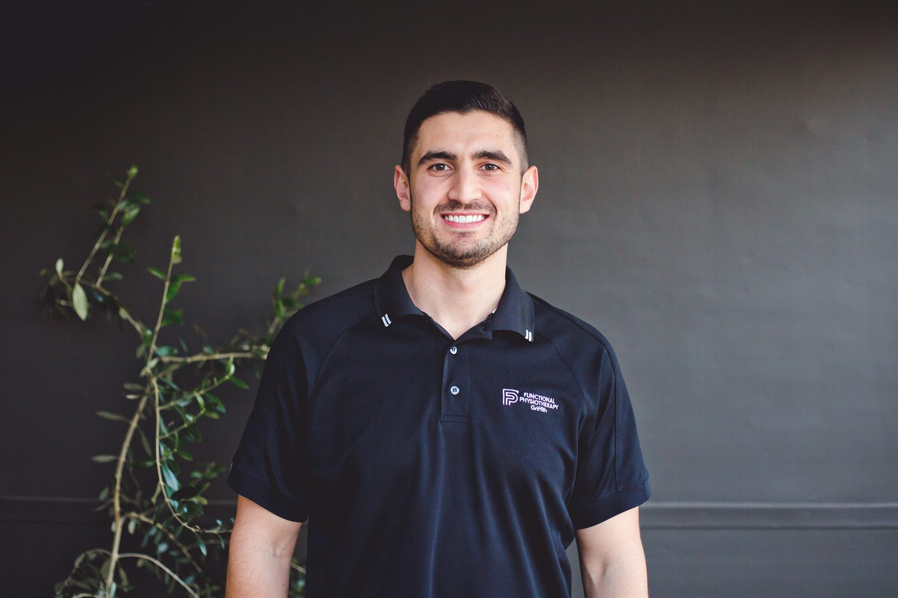

Chris holds a Bachelor of Exercise Science from the University of Wollongong and a Master of Physiotherapy from UTS, and has more than eight years of clinical experience behind him. He has worked with athletes and sporting teams, in aged care, and with people living with disability.
He founded Functional Physiotherapy in 2022, originally in his home town of Griffith, NSW. The practice now operates from Dapto, inside Dapto Medical Professionals on the Princes Highway.
Chris takes a performance-based approach to help people improve their health, function and capacity for day-to-day life or competitive sport.
He takes a conservative approach to injury management, looking to avoid or limit invasive treatment options where appropriate. His work includes spinal and joint-related problems, headaches, vertigo, TMJ dysfunction, strength and conditioning, and pre- and post-operative care.
His treatment techniques include advanced dry needling, joint mobilisation and exercise therapy. He has a special interest in dry needling and non-operative ACL rehabilitation.
Outside of work, you can find Chris hanging out with friends and family, playing soccer or having a hit of golf.
Every physiotherapist develops areas they go deeper on. These are his.
Chris has completed three advanced GEMt dry needling courses and assists in teaching the technique to other health practitioners.
Dry needlingRehabilitating ACL injuries without reconstruction where that is the right call, and preparing the knee properly where it is not.
ACL rehabilitationDiagnosing what the tissue was not ready for, and building runners back up without taking their running away entirely.
Running injuriesPersistent and long-standing pain, where progress is measured in months and honesty about timeframes matters more than optimism.
Chronic pain physiotherapyPositional vertigo, BPPV and balance problems, frequently resolved in one or two sessions once correctly identified.
Vertigo & headachesJaw pain, clicking and restricted opening, and the neck and headache problems that so often travel with them.
TMJ physiotherapyWe’re looking for physiotherapists to join Functional Physiotherapy in Dapto. If you’re interested in working with us, visit our careers page to find out more.
Your appointment is with your physiotherapist, start to finish. You are not passed to an assistant halfway through, and you are not put on a machine in the corner while other people are seen.
That matters clinically, not just as a courtesy. Assessment continues through the whole session, so treatment gets adjusted as we learn more. Exercises are taught and corrected rather than handed over on paper. And because the same person sees you each visit, we notice when something is not progressing the way it should, and say so.

Book an appointment online, or call the clinic and we will help you get started.